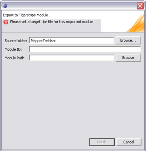
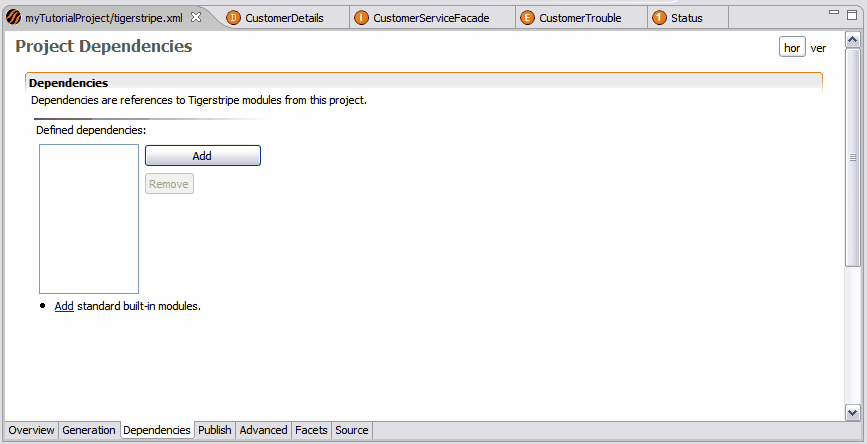

Tigerstripe Modules are binary-like versions of a Tigerstripe Project. Their content can be referenced, thus shared between multiple projects, but cannot be modified. This provides an ideal mechanism to share information models between Service Contract designs.
Typically, when projects need to share a common Information Model, the model should be stored in its own Tigerstripe project. This "common model" project can then be exported to a Tigerstripe Module that will be referenced as a dependency by all Service Contracts relying on the common information model. Using this mechanism, the common information model can be maintained separately, but still each Service Contract can extend it locally..
Let review the steps involved in this scenario:
By creating a Tigerstripe Module, you take the content of an existing project and wrap it into a non-modifiable .jar file that contains all the information required for other projects to consume it.
Select the Tigerstripe project you want to create a module from in the Tigerstripe Explorer. Right-click on the root of the project and select the Publish->Tigerstripe module... menu option. The following dialog opens:

This wizard contains the following parameters:
- Source Folder: the source repository containing the Tigerstripe model to export to a module.
- Module ID: this is a parameter intended to identify the module to be created. This tag will be embedded into the module (independently of the filename for this module). Any String and convention can be used for this parameter. Please note that the general information of the current project being exported will also be embedded in the created module for further identification purpose (name, version and description).
- Module Path: this is the absolute path to the module file to be created.
Once valid values have been populated for these parameters, press Finish to create the module. The corresponding .jar file will appear at the given path and is ready to be referenced from other projects.
© copyright 2005, 2006, 2007 Cisco Systems, Inc. - All rights reservedOnce a module file has been created, it is ready to be consuming from other projects, so that its content can be referenced and extended.
To do so, the module needs to be added as a dependency in the project consuming the module. Before this is possible, the module file needs to be copied into the target consuming project. This can be done by a simple drag-n-drop operation in the Tigerstripe Explorer.
The dependencies of a project are defined in the Tigerstripe Descriptor of that project, on the Dependency tab:

When pressing the Add button, a list of candidate .jar module files is presented for selection. Simply double-click on the selected .jar module file. It will be added to the list of dependencies. Once all the dependencies have been added, make sure to save the Tigerstripe Descriptor for the changes to be taken into account.